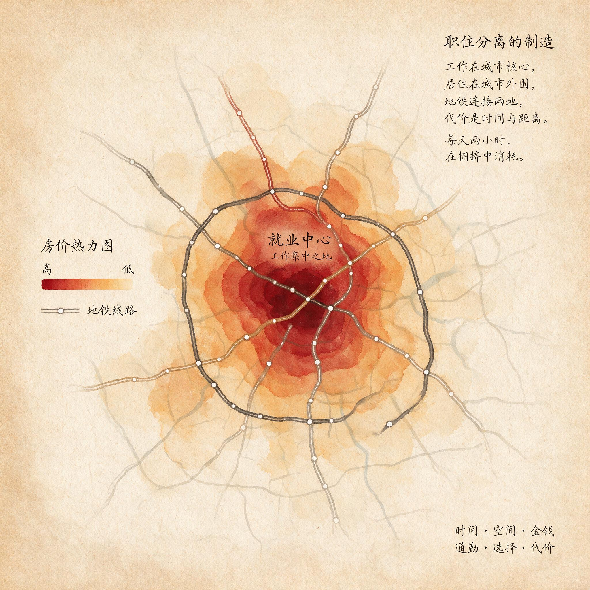

第 9 章
职住分离的制造
在十九世纪工业城市的清晨，一个工人推开临街的木门，沿着煤渣路步行四分钟，在汽笛响起前站到了车床旁。他的住所是工厂主建造的联排宿舍，与车间只隔一道围墙。同样的空间逻辑支配着曼彻斯特的纺织厂区、鲁尔区的钢铁厂周边、匹兹堡的轧钢厂附近：居住地与生产地在物理上高度重合，通勤距离通常不超过一公里。这不是城市规划者的远见，而是工业革命早期城市空间的默认秩序——工厂主需要工人随叫随到，工人付不起任何交通工具的费用，城市还没有大到足以把居住和就业拆成两件事。
这幅图景在一个多世纪后被彻底改写。今天，在北京，一个住在回龙观的程序员每天单程通勤十九公里去中关村；在亚特兰大，一个住在科布县的会计开车四十分钟去巴克海特区上班；在伦敦，一个住在克

罗伊登的教师坐火车三十五分钟到滑铁卢站再转地铁。
这些距离不是偶然的个体选择。法律工具将居住与工作在空间上强制隔离，信贷工具将特定人群锁定在特定区域，规划工具将就业岗位本身也迁出了市中心。
理解这个制造过程，才能看清“就近上班”如何从默认选项变成了奢侈品。混合秩序的瓦解在表面上是交通技术推动的。十九世纪末，有轨电车和通勤铁路的出现使中产阶级家庭第一次有可能住在远离烟尘的郊区同时保留市中心的工作。波士顿的“电车郊区”在1890年代沿着新铺设的轨道迅速扩张，独栋住宅出现在原本是农田的土地上。伦敦大都会铁路公司干脆发明了“Metro-land”这个词来推销米德尔塞克斯的乡村别墅。
但交通技术只提供了可能性，没有规定必然性。轨道的铺设路线、车站的选址、票价的结构、沿线土地的开发权限——这些都不是技术自身决定的，而是市政当局、地产商和铁路公司之间博弈的结果。技术打开了空间，但谁来填满这个空间、以什么方式填满，则由制度写定。
真正将职住分离从少数中产阶级的选择变成全体市民的宿命的，是二十世纪上半叶登场的一个法律工具：分区规划，尤其是其最严格的形式——单一用途分区。
1916年纽约市颁布了美国第一部综合分区条例，最初动机相当具体：控制摩天楼高度以保证街道采光，限制工厂向第五大道高端商业区扩张。但奠定单一用途分区宪法地位的，是1926年俄亥俄州欧几里得村诉安布勒房地产公司案。美国最高法院在该案中裁定，地方政府有权通过分区法规将土地划分为不同用途区域。判决书中的一段话泄露了天机：“公寓楼在单户住宅区就像是一个寄生虫，吞噬了独栋住宅的开放空间和宁静氛围。”最高法官们不是在讨论通风采光，而是在划定阶级边界。
一份典型的欧几里得分区法规文本这样写道：“在标明为‘U-1’的单户住宅区内，以下用途被明确禁止：任何形式的商业或工业活动；公寓楼或多户住宅建筑；任何非附属性的建筑结构。”
条文本身枯燥、技术化、不带感情色彩，但它的空间后果是革命性的。在此之前的美国城市，社区底层的杂货铺、街角的铁匠铺、住宅楼背后的小作坊是城市肌理的正常组成部分。一个工人可能住在面包房楼上，上班在三条街外的家具厂。
这种混合用途的社区在分区规划的法律效力下从“正常”变成了“非法遗留”。新开发的郊区被严格划分为纯粹的居住区，不仅不允许工厂，连便利店、咖啡馆都被禁止。居住与工作在物理空间上的隔离被写进了法律条文。
分区规划不是中性的技术工具。它公开宣称的目标是保护公共健康和安全——将居住区与排放烟尘的工厂分离确有公共卫生的合理依据。但它同时完成的，是将“住在工厂隔壁”从经济必要性变成法律禁止。对于低收入工人来说，靠近工厂居住意味着节省通勤时间和交通开支；对于小商贩来说，住在店铺楼上意味着节省一份房租。分区规划取消了这些可能性，用法律强制力重塑了城市肌理。
居住区必须与就业场所保持距离，这直接制造了通勤的需求。长距离通勤从此不再是个人偏好，而是被法律轨道引导的必然行为。
单一用途分区在战后美国被全面推广，与新开辟的郊区住宅区同步扩张。但法律工具只解决了“可以住在哪里”的问题，另一个更隐秘的工具决定了“谁可以住在哪里”。
这就是住房金融体系中的红线政策——一套系统性的信贷歧视机制。1934年联邦住房管理局成立，核心使命是通过提供抵押贷款保险刺激住房建设。FHA的《承销手册》在1938年版中明确写道：“如果一个社区被不协调的种族或国籍群体渗透，将导致房产价值下降。”手册建议评估师检查社区是否受到“不利影响”，包括“非种族群体的侵入”。这种语言不是边缘化的个别偏见，而是写入联邦住房政策指导文件的标准化评估标准。
房主贷款公司编制了美国两百多个城市的“住宅安全地图”，用四种颜色标记社区风险等级：绿色代表“最佳”，蓝色代表“仍可期待”，黄色代表“正在衰退”，红色代表“危险”。被圈入红色区域的标准主要是种族构成——任何有黑人居住的社区，无论建筑质量和居民收入水平如何，几乎都被自动划入红色区域。这些红线地图成为银行发放抵押贷款的决策依据。在红色区域内，传统的长期低息抵押贷款几乎无法获得。
居民只能求助于高风险的地产合同贷款——这种贷款不提供产权转移，一次违约就可能导致全部投入血本无归，利率远高于市场平均水平。绿线区域获得了联邦住房管理局担保的低首付、低利率、三十年固定利率贷款的慷慨支持。1934年至1962年间，FHA担保的贷款中超过百分之九十八流向了白人家庭。
这组信贷工具的空间后果是制造了二战后美国郊区化浪潮中的种族隔离格局。白人中产阶级家庭利用联邦担保的廉价贷款从市中心迁往新建的郊区纯居住区——这些郊区正是按照单一用途分区法规建造的，除了住宅什么也没有。黑人家庭被锁定在市中心的老旧社区，无论收入水平是否足以负担郊区住宅，信贷渠道都被系统性切断。这一机制在战后二十年里完成了美国历史上最大规模的财富转移：郊区住宅的升值收益、优质公立学校的入学资格以及与之捆绑的就业机会绝大部分流向了白人家庭。
而市中心社区的居民不但被剥夺了积累住房资产的机会，还要承受更长的通勤时间——不是因为城市“自然扩张”，而是因为就业岗位也开始追随白人中产阶级向郊区迁移。
工作岗位的郊区化是职住分离制造的第三个历史节点。二十世纪中叶以前就业高度集中在市中心：工厂沿铁路线和港口布局，办公楼簇拥在中央商务区。郊区是纯粹的卧城——人们在这里睡觉，但工作、购物、娱乐都在市中心。有轨电车和通勤铁路的线路图清晰地反映了这种结构：从郊区到市中心的放射状线路早高峰满载进城，晚高峰满载出城，反向几乎空载。
但到了1970年代，企业开始将办公园区和产业园区迁往郊区——沿着环城高速公路的出口，在郊区住宅区与市中心之间的地带出现了大量低密度就业中心。这些新园区青睐郊区的理由很充分：土地价格远低于市中心，单一用途分区保证了周边不会有“不协调”的用途，高速公路和宽阔的停车场使员工可以开车上班，而员工中的白领阶层已经住在了郊区。
“边缘城市”这个词在1991年由记者乔尔·加罗提出，用来描述这种在高速公路交汇处形成的集办公、零售和居住于一体的新城市形态。但“自发”并不准确。边缘城市的出现同样是一系列制度安排的结果：高速公路的联邦投资决定了哪些区位具有可达性，地方政府的税收减免和土地出让政策决定了哪些地块被开发为产业园区，而分区规划在郊区预留了大量可开发为办公园区的空地。
到二十世纪末，美国最大的十五个都市区中超过百分之六十的就业岗位位于距离市中心十英里以外的区域。通勤流的几何形状从放射状变成了网格状：家在远郊，公司在近郊，市中心在中间——在许多人的日常通勤中，市中心只是一个需要绕行或穿过的障碍。
多中心通勤格局的后果是通勤距离的不可预测性。在一个放射状结构的城市中人们大致知道谁住得远谁住得近：郊区居民通勤距离长，市区居民通勤距离短，存在一个简单的梯度。
但在多中心结构中住在市中心的人可能每天开车去郊区的办公园区上班，住在远郊的人可能在家门口的商业园区工作，而住在近郊的人可能通勤距离最长——因为他的工作恰好在城市另一端的另一个郊区。通勤流不再遵循简单的中心-边缘逻辑，而是形成了一张复杂的网络。这张网络的编织者仍然是分区规划、住房信贷和交通投资这三只手，只是它们的操作变得更加精细也更加难以从个体的日常经验中察觉。
中国城市的职住分离走过了一条不同的路径但遵循了同样的逻辑。在单位制时代——大致从1950年代到1990年代中期——中国的城市空间组织以“大院”为基本单元。一个典型的国营工厂大院包含生产车间、职工宿舍、食堂、浴室、子弟学校、医务室甚至礼堂和运动场。职工从宿舍楼走到车间通常不超过十分钟。居住地与生产地在空间上高度重合，通勤几乎不存在。这不是因为中国城市更先进，而是因为单位制将住房作为就业的附属福利物理上捆绑在一起。
一个人换工作就意味着搬家——从原单位的宿舍搬到新单位的宿舍，职住始终合一。
1998年住房商品化改革全面推开。单位不再分配住房，居民需要通过市场购买商品房。就业市场化也在加速推进：国企改制大量释放劳动力，私营企业和外资企业兴起，人们换工作的频率急剧上升。两条改革轨迹同步推进将原本捆绑在一起的职与住在制度上解开了。一个人可以在海淀买到商品房同时在朝阳换了一份新工作而不必搬家——这在单位制时代是不可想象的。职住分离从制度上被释放出来。
但释放之后的走向同样由规划和投资写定。中国城市在21世纪初的扩张模式普遍采用了“新城开发”与“产业园区布局”并行的策略。一份典型的新城总体规划会明确将用地划分为居住组团、产业组团和综合服务组团，各组团之间由宽阔的城市主干道连接。这种规划逻辑在形式上与欧几里得分区规划异曲同工：将不同的城市功能在空间上分离然后通过交通系统连接它们。
但中国的规划实践中有一个关键特征：公共交通的配套往往滞后于土地出让和住宅建设的时间表。
在北京，回龙观和天通苑两大居住区在2000年代初大规模开发，以相对低廉的价格吸引了数十万在市中心工作的年轻家庭。但在入住后的头几年里地铁尚未延伸至此，居民每天需要挤公交经京藏高速进城，单程通勤时间动辄两小时以上。地铁13号线和8号线分别于2002年和2011年才分段开通，而且开通后迅速被挤爆——因为规划的人口密度和实际入住人口之间存在巨大缺口。同样的故事在上海、广州、深圳的郊区新城反复上演：住宅楼率先交付，产业园区同步招商，但公共交通的运力总是在居民入住数年之后才勉强跟上。
这种时序错位不是偶然的技术失误而是土地财政驱动的开发模式的内在特征：土地出让收入是地方政府的关键财源，住宅用地出让可以迅速回笼资金而地铁建设需要巨额前期投入和漫长工期。先行出让居住用地、用卖地收入补贴后续交通建设是许多城市在财政约束下的理性选择。
但这一选择的代价落在了数百万居民的通勤时间里。产业园区与居住区的分离在中国还有一个特殊的推手。1990年代以来各地政府纷纷设立经济技术开发区和高新技术产业园区，这些园区通常选址在城市边缘或远郊以低廉的土地价格和税收优惠吸引企业入驻。园区的总体规划中产业用地占据绝对主体，配套居住用地比例很低且往往定位于园区管理层和高端技术人才的商品房而非普通工人的可负担住房。
结果是大量在园区工作的蓝领工人和低收入白领只能在更远的乡镇租房，每天乘坐拥挤的厂车或公交长距离通勤。在苏州工业园区、深圳龙华富士康园区、郑州航空港区这种模式以惊人的规模复制：数十万工人每天在宿舍或出租屋与流水线之间往返，通勤时间以小时计。这些不同的历史路径——美国的郊区化与红线政策、中国的单位制解体与新城开发——指向同一个结论：职住分离不是城市规模扩大的自然伴生现象而是被土地制度、住房政策和交通规划共同写定的空间剧本。
剧本的核心机制是先将居住与就业在空间上分离再通过交通系统连接它们，同时让居住成本与通勤成本在不同群体之间不均匀分布。那些支付最短通勤时间的人通常支付了最高的住房成本；那些支付最低住房成本的人通常支付了最长的通勤时间。这个交换关系本身就是制度制造的产物。
理解这一点需要回到一个更朴素的起点。在十九世纪工业城市一个工人可以在工厂隔壁找到住处不是因为那时的城市更人性化而是因为工厂主需要稳定的劳动力供应而工人没有能力支付任何通勤开支。那时的住房市场不存在今天意义上的“自由选择”：工人住在工厂宿舍或厂主指定的出租屋，租金从工资中扣除，离职意味着失去住处。
这种捆绑是赤裸裸的权力关系但它在空间上制造了一个副产品——职住合一。二十世纪的改革者们正确地看到了这种捆绑的压迫性——住房不应是雇主控制工人的工具，居住地应当与工作地脱钩，个人应当有选择居住地的自由。但改革的结果是职住脱钩之后自由选择很快被另一套制度框架重新约束。
分区规划规定了你可以住在什么样的地方，住房信贷决定了你可以住在哪里，交通投资定义了你的通勤路径。分区规划实施前后城市混合用地比例的急剧下降提供了一个冷峻的量化证据。在纽约市1916年分区条例通过之前曼哈顿下东区的典型街区底层是商店和作坊楼上三层是住宅后院可能还有一个小工厂。
这种混合用途的建筑形式占当时建筑总量的比例超过百分之六十。到1961年纽约市全面修订分区法规时单一用途分区已经覆盖了全市绝大部分土地，混合用途在新开发项目中几乎绝迹。同一时期美国城市的平均通勤距离从1900年的不足三公里增加到1970年的超过十五公里。这两个数字的同步变化不是巧合而是因果。
十九世纪末的工人平均通勤距离以今天的标准来看几乎可以忽略不计。1890年芝加哥的屠宰场工人大部分住在距离工厂一英里以内的社区步行十五分钟可到。匹兹堡的钢铁工人住在厂区周边的山坡上沿着陡峭的木梯上下班通勤时间不超过二十分钟。
曼彻斯特的纺织工人住在工厂主建造的联排宿舍里从家门口到车间门口的距离通常不超过三百米。这些数字之所以这么小不是因为城市小——1890年的芝加哥已经有超过一百万人口城市建成区面积超过两百平方公里——而是因为职住分离还没有被制度性地制造出来。工人没有选择但他们确实不需要通勤。一个多世纪后通勤距离的膨胀达到了惊人的量级。
根据美国人口普查局的数据2019年美国工人的平均单程通勤距离为二十六公里单程通勤时间超过二十七分钟。在中国北京、上海、广州、深圳的平均通勤距离在2020年均已超过九公里平均通勤时间超过四十分钟。极端通勤者——单程通勤超过六十分钟的人群——在北上广深占到通勤人口的百分之十二以上在北京甚至接近百分之二十。这些数字背后的制度推力远比个人选择更为强大。
一个人选择住在郊区而工作在市中心表面上是权衡了房价、面积、学区、环境之后的理性决策但这个决策的前提——郊区只有住宅、市中心聚集就业、连接两者的交通系统以特定方式定价——都是由制度预设的。美国红线政策的遗产在二十一世纪仍然清晰可见。2018年的一项研究比较了当年被红线划出的社区和绿线社区在今天的特征：红线社区的家庭收入中位数仍然显著低于绿线社区住房拥有率低约三十个百分点平均通勤时间则长出约百分之十五。
这些社区的居民不仅承受着更长的通勤还承受着更差的通勤条件——公共交通覆盖率更低道路维护状况更差通往就业中心的公交线路更少。红线政策在1968年《公平住房法》通过后已经正式废除但它在空间上刻下的沟壑持续地塑造着数百万人的日常通勤。
曾经被剥夺了郊区化机会的黑人家庭当城市就业向郊区扩散时他们被困在市中心却需要在更远的地方寻找工作。这就是所谓的“空间错配”：低技能就业岗位在郊区低技能劳动者住在市中心两者之间缺乏有效的公共交通连接。
在台北这个问题的表现形式有所不同但制度逻辑同样清晰。台北市在1990年代人口达到顶峰约二百七十万人此后由于市中心房价高昂人口开始持续流失。截至2026年6月底，台北市的戶籍人口約有243万人，人口密度每平方公里約有8,930人，在全国所有直轄市与县市中，人口密度居冠。
多数在台北市工作的人实际居住在新北市两地仅隔一条淡水河但通勤体验却因桥梁和道路的拥堵而大打折扣。台北捷运的线路网络以市中心为核心向郊区放射板桥、中和、新店、淡水等新北市区域通过捷运与台北市中心连接但捷运站周边的房价在通车后迅速上涨将许多原来住在那里的居民进一步挤向更远的区域。
职住分离的制造在台北表现为一个持续的向外推移：捷运延伸到哪里房价就涨到哪里通勤时间预算的底线却始终岿然不动——人们仍然每天花大约一小时通勤只是住得更远房价更低或者面积更小。合作住宅的理念在近年来被重新提起作为一种可能的替代方案。2016年联合国人居三大会通过的《新城市议程》中将合作住宅视为一种“居住的社会化生产”方式。
其核心主张是居民共同参与住房的设计、建造和管理在社区层面实现居住与部分就业功能的混合——比如在住宅区内设置共享办公空间、社区工坊、小型商业设施。这种模式的逻辑恰恰是在挑战单一用途分区制造的空间隔离：它试图将原本被制度分开的功能重新缝合在同一片土地上。
但在大多数城市合作住宅的法律障碍仍然巨大：分区法规不允许在纯居住区进行任何商业或生产活动建筑规范不支持混合用途的住宅设计银行的抵押贷款产品只为标准的单一用途住宅设计。制度在制造分离方面的效率远远高于它在缝合分离方面的努力。职住分离的制造不是在某个历史时刻一蹴而就的而是一个持续了将近一个世纪至今仍在进行中的过程。
它的每一步都有一份正式的法律文件、一项具体的信贷政策或一份完整的规划图纸作为支撑。这些制度工具在各自的历史语境中都有其宣称的正当理由：公共卫生、社区稳定、经济增长、财政可持续。
但它们在合力完成的工作是同一件：将居住与工作在空间上拉开距离让通勤成为人们日常生活不可逃避的组成部分然后将这种距离伪装成个人自由选择的结果。十九世纪末工人平均通勤距离不足一公里。二十一世纪大都市平均通勤距离超过十五公里。
这两个数字之间的一百多年不是城市“自然生长”的历史而是一部制度持续制造分离的历史。分区规划在物理空间上划定了楚河汉界住房信贷按种族和收入分配了居住地点产业园区规划将就业岗位拉出了市中心而公共交通投资的时间表将通勤时间的代价转嫁给了购房者。每一步都有人获利每一步都有人付出代价。
当数百万被制度分隔开的职与住每天同时涌向有限的道路空间时一个新的问题不可避免地浮现出来。这些分离的居住地与就业地连接它们的道路和轨道在高峰时段的容量是有限的。每个人都在按照制度分配的居住地点和就业地点选择自己的通勤路径但当这些路径在某个时间窗口大量重叠时就汇成了拥堵。
拥堵不是偶然的交通故障而是职住分离的必然下游后果——它是空间市场在面对制度制造的错配时唯一能够做出的出清反应。